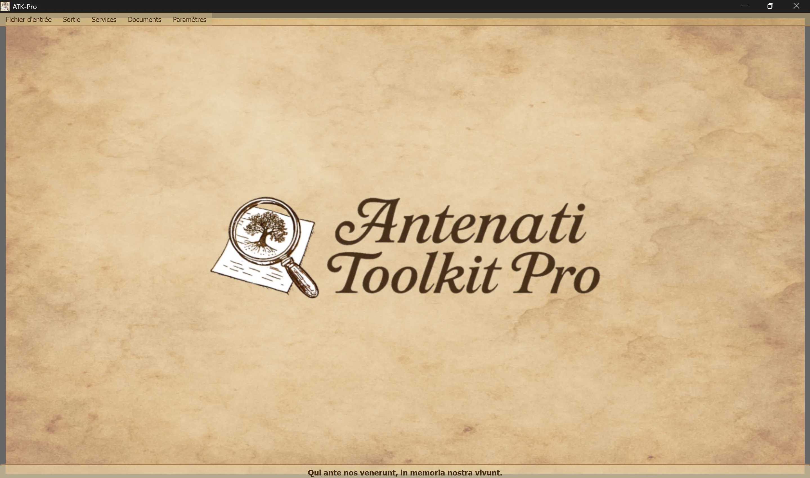

────────────────────────────────────────────────────────────────────────────────
🪟 Windows
ATK-Pro-Setup-vx.x.x.exe depuis la page officielle des versions🐧 Linux
ATK-Pro-vx.x.x.deb (Debian/Ubuntu) ou .tar.gz depuis la page des versionssudo dpkg -i ATK-Pro-vx.x.x.deb ou double-cliquez dans Nautilus/Files./ATK-Pro depuis le dossier extrait🍎 macOS
ATK-Pro-vx.x.x.dmg depuis la page des versions🪟 Windows
C:\Program Files\ATK-Pro\C:\Users\[TuoNome]\Documents\ATK-Pro\output\C:\Users\[TuoNome]\Documents\ATK-Pro\input\🐧 Linux
/opt/ATK-Pro/ (deb) ou dossier extrait (.tar.gz)~/Documents/ATK-Pro/output/~/Documents/ATK-Pro/input/🍎 macOS
/Applications/ATK-Pro.app~/Documents/ATK-Pro/output/~/Documents/ATK-Pro/input/────────────────────────────────────────────────────────────────────────────────
Les langues disponibles sont :
avec lesquelles, sur la base des données disponibles fin 2025, on estime pouvoir couvrir environ 98 % des descendants d’Italiens et des communautés italiennes ou italophones dispersées dans le monde.
Lors de la première exécution, le programme crée automatiquement les dossiers suivants :
C:\Users\[TuoNome]\Documents\ATK-Pro\output\C:\Users\[TuoNome]\Documents\ATK-Pro\output\doc\ (documents par défaut)C:\Users\[TuoNome]\Documents\ATK-Pro\output\reg\ (registres par défaut)~/Documents/ATK-Pro/output/input\ analogue (facultatif, pour les fichiers d’entrée)Pendant le traitement, des dossiers temporaires sont créés pour les tuiles téléchargées (tiles_canvas_X/) et, si le PDF est demandé, des fichiers temporaires sont créés pour sa génération.
Tous les dossiers et fichiers temporaires sont automatiquement supprimés à la fin du traitement.
Seuls les fichiers finaux traités sont conservés (images dans les formats choisis, PDF, manifestes et métadonnées).
Pour modifier les dossiers de sortie, utilisez Menu → Paramètres → « Sélectionner les dossiers de sortie ». Les choix sont enregistrés et restaurés automatiquement lors de la session suivante.
La commande Paramètres → Profil de ressources règle le parallélisme utilisé pendant le téléchargement, la reconstruction des images et la génération des PDF :
Le profil ne modifie ni la qualité, ni les droits, ni la quantité des documents acquis. Les limites de précaution propres à un portail restent prioritaires.
────────────────────────────────────────────────────────────────────────────────
La fenêtre principale d’Antenati Toolkit Pro présente une structure simple et intuitive.

En bas figure la devise latine « Qui ante nos venerunt, in memoria nostra vivunt », qui rappelle l’importance des racines et de la mémoire collective.
Dans la partie supérieure de la fenêtre, sous l’en-tête :
[Fichier d’entrée] [Sortie] [Services] [Documents] [Paramètres]
Chaque menu contient des boutons et des options spécifiques (voir la section suivante).
Gère le chargement des enregistrements IIIF :
├─ Exemple d’entrée
│ └─ Affiche le fichier d’exemple (présente le format des paires : mode D/R + URL)
├─ Ouvrir l’entrée
│ └─ Sélectionne un fichier .txt contenant vos enregistrements IIIF
│ (Il doit contenir des paires : mode D/R à la ligne 1, URL à la ligne 2)
└─ Modifier l’entrée
└─ Modifie le fichier d’entrée actuellement chargé
(Ajoutez/supprimez des enregistrements, modifiez les URL, enregistrez les modifications)
Gère le traitement et la sortie :
├─ Traiter │ └─ Lance le téléchargement, la reconstitution et l’enregistrement des images │ (Affiche une fenêtre de progression en temps réel) ├─ Ouvrir le dossier de sortie │ └─ Ouvre dans l’Explorateur de fichiers le dossier contenant les fichiers traités └─ Afficher les traitements précédents └─ Liste des enregistrements déjà traités
Liste des services intégrés :
├─ Recherche assistée par l’IA │ └─ Suggère des portails, des pistes de recherche et des requêtes généalogiques à vérifier ├─ Affichage des images │ └─ Visionneuse des images téléchargées et/ou des PDF générés ├─ Affichage des métadonnées JSON │ └─ JSON d’origine et métadonnées (généalogiques, techniques, EXIF) ├─ OCR avancé │ └─ Textes manuscrits du XIXe siècle, en latin ecclésiastique et de la fin du Moyen Âge ├─ Traduction OCR │ └─ Traduction automatique des textes extraits dans les langues sélectionnées └─ Exportation GEDCOM └─ GEDCOM, Gramps, Family Tree Maker, Ancestry, MyHeritage, WikiTree, etc.
Accès aux ressources et à la documentation :
├─ Clause de non-responsabilité - Clauses juridiques et conditions d’utilisation ├─ Présentation de l’auteur - Parcours de l’auteur du projet ├─ Présentation du projet - Histoire, motivations et feuille de route d’ATK-Pro ├─ Guide - Index principal du guide modulaire └─ Informations - Version, droits d’auteur et adresse e-mail de contact
Configuration générale du programme :
├─ Changer de langue
│ └─ Sélectionne la langue de l’interface (redémarrage requis)
├─ Sélectionner les formats d’image
│ └─ Choisissez parmi PNG, JPG, TIFF et PDF (au moins 1 obligatoire)
│ PDF peut être sélectionné seul ou avec les formats d’image
│ Le choix est mémorisé et présélectionné automatiquement lors de la session suivante
├─ Sélectionner les dossiers de sortie
│ └─ Ouvre d’abord le choix du mode de gestion des dossiers, puis les fenêtres de sélection :
│ • Dossier unique pour tous → un seul dossier pour les documents et les registres
│ • Dossiers séparés doc/reg → un dossier pour tous les documents, un autre pour tous les registres
│ • Un dossier par enregistrement → un dossier distinct pour chaque enregistrement
│ Le mode et les dossiers sont mémorisés et restaurés lors de la session suivante
├─ Exporter la configuration
│ └─ Enregistre les paramètres actuels dans un fichier
├─ Importer la configuration
│ └─ Charge un fichier de paramètres précédemment enregistré (restaure toutes les préférences et tous les chemins)
├─ Rechercher les mises à jour
│ └─ Vérifie si de nouvelles versions du programme sont disponibles
└─ Fermer
└─ Quitte le programme (affiche une bannière de soutien PayPal.me)
────────────────────────────────────────────────────────────────────────────────
ATK-Pro est disponible en 20 langues :
La langue peut être changée à tout moment via Menu → Paramètres → Changer de langue.
Le programme nécessite un redémarrage pour appliquer la nouvelle langue.
Au redémarrage, le programme charge automatiquement la nouvelle langue sélectionnée.
Lors du changement de langue, les éléments suivants sont traduits :
Si un modèle par défaut est retiré ou devient indisponible, ATK-Pro interroge le catalogue visible pour l’identifiant, sélectionne un modèle généraliste compatible avec la fonction et les images si nécessaire, puis essaie jusqu’à trois alternatives. Le repli ne s’active pas en cas d’erreur de quota, de réseau ou d’authentification.
Modèle personnalisé : un modèle saisi manuellement reste obligatoire et n’est jamais remplacé automatiquement.